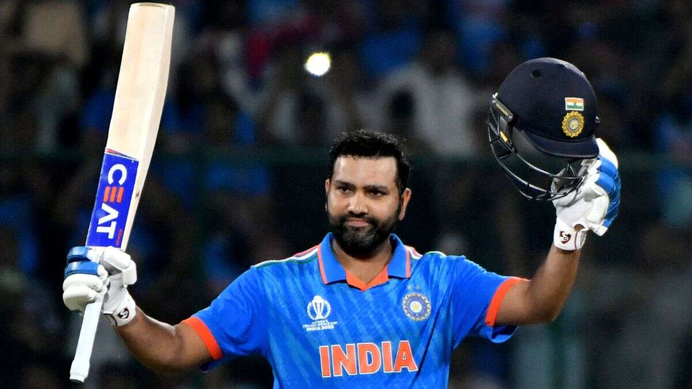
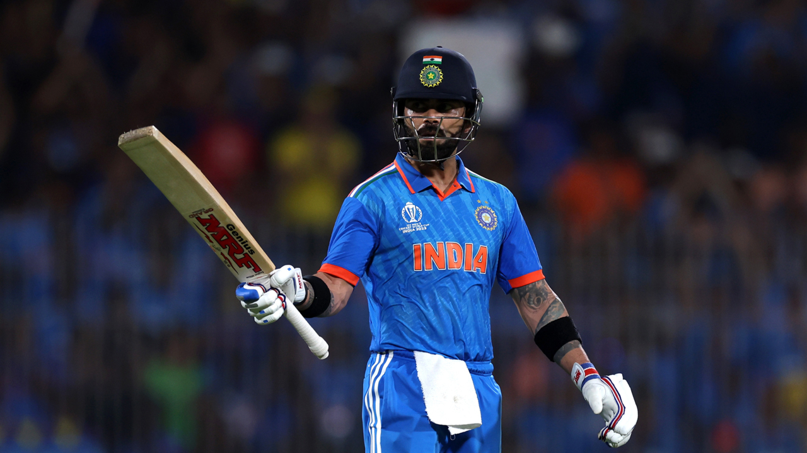
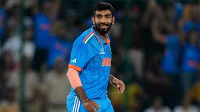
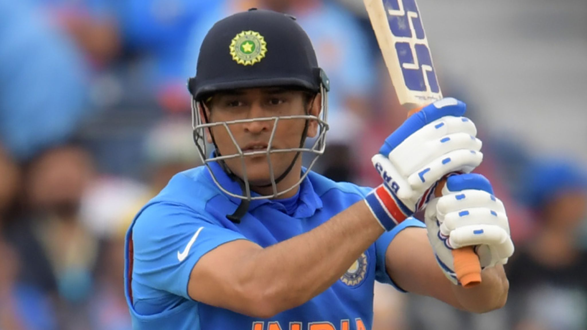

Cricket Players:
*Rohit Sharma

*Personal Information
Born Apr 30, 1987 (36 years)
Birth Place Nagpur, Maharashtra
Height --
Role Batsman
Batting Style Right Handed Bat
Bowling Style Right-arm offbreak
*ICC Rankings
Test ODI T20
Batting 10 4 --
Bowling -- -- --
more information
*Virat Kohli

*Personal Information
Born Nov 05, 1988 (35 years)
Birth Place Delhi
Height 5 ft 9 in (175 cm)
Role Batsman
Batting Style Right Handed Bat
Bowling Style Right-arm medium
*ICC Rankings
Test ODI T20
Batting -- 3 --
Bowling -- -- --
more information
*Sachin Tendulkar

*Personal Information
Born Apr 24, 1973 (50 years)
Birth Place Bombay (now Mumbai), Maharashtra
Height 5 ft 5 in
Role Batsman
Batting Style Right Handed Bat
Bowling Style Right-arm legbreak
*ICC Rankings
Test ODI T20
Batting -- -- --
Bowling -- -- --
more information
*Jasprit Bumrah

*Personal Information
Born Dec 06, 1993 (30 years)
Birth Place Ahmedabad
Height --
Bowling Style Right-arm fast
Role Bowler
Batting Style Right Handed Bat
*ICC Rankings
Test ODI T20
Batting -- -- --
Bowling -- 4 --
more information
*Ms Dhoni

*Personal Information
Born Jul 07, 1981 (42 years)
Birth Place Ranchi, Bihar (now Jharkhand)
Height 5 ft 11 in (180 cm)
Role WK-Batsman
Batting Style Right Handed Bat
Bowling Style Right-arm medium
*ICC Rankings
Test ODI T20
Batting -- -- --
Bowling -- -- --
more information